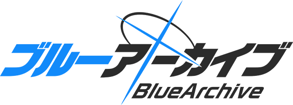

关于《蔚蓝档案》发行商变更的通知
今后日程
- 2026年10月25日（周日）
-
《蔚蓝档案》发行商变更公告发布
- 2026年11月
-
总制作人金容河 × Yostar 社长李衡达 对谈视频公开
《蔚蓝档案》账号继承手续页面上线
- 2027年1月
-
实施将发行商由 Yostar 变更为 NEXON 的维护
发行商变更后，将陆续发放下列特典。
- 免费100抽
- 【特别】周年限定3★学生自选券 ×1
- 信用积分 ×24,600,000
- 特级活动报告书 ×75
- 高级活动报告书 ×250
- 高级强化珠 ×1,585
- 【特别】万能设计图套装盒 ×8,175
- 行动点 ×2,000
- 详细的发放日程、使用期限等信息，将于日后另行通知。
- 免费100抽为独立活动，不属于《蔚蓝档案》6周年期间的活动内容。
-
使用「【特别】周年限定3★学生自选券」，可从以下学生中选择1名加入。
若选择已经获得的学生，则将改为获得该学生的神名文字×100。
- 若藻
- 星野（泳装）
- 未花
- 花子（泳装）
- 日奈（礼服）
- 星野（临战）
- 白子＊恐怖
- 妮露（制服）
- 莉央
- 未花（泳装）
- 渚（泳装）
- 爱丽丝（临战）
- Kei
- 「【特别】万能设计图套装盒」为可获得9种万能设计图各1个的道具。
- 2027年1月23日（周六）・24日（周日）
-
「蔚蓝档案Fes！～Rock with me♪～」举办
感谢各位老师一直以来对《蔚蓝档案》的支持与厚爱。
自2027年1月起，《蔚蓝档案》日本服的发行商将由 Yostar 股份有限公司变更为 NEXON 股份有限公司。
包括各位老师所持有的青辉石在内的全部游戏账号数据，都将完整继承。
以下整理了本次发行商变更相关的常见疑问，并在此一并作答。
1. 关于发行商变更
Q. 什么是"发行商变更"？
《蔚蓝档案》日本服的运营与发行负责公司，将由 Yostar 股份有限公司变更为 NEXON 股份有限公司。
开发公司仍为 NEXON Games，游戏开发体制不会发生变化。
关于本次发行商变更的详细缘由，我们将于日后另行说明。
Q. 发行商将从什么时候开始变更？
我们将于2027年1月实施伴随发行商变更的维护。
维护结束后，即由 NEXON 股份有限公司正式开始运营服务。
关于维护的详细日程，将于11月内公布。
Q. 官方社交媒体账号会有变化吗？
官方社交媒体账号（X、YouTube、TikTok 等）在发行商变更后仍将正常运营。
2. 关于账号
Q. 游戏账号数据会被继承吗？
会被继承。
包括青辉石在内的全部游戏账号数据，在发行商变更后均可继续使用。
Q. 为了继承账号，需要提前办理什么手续吗？
需要提前将《蔚蓝档案》的游戏账号与 Yostar ID 绑定，并完成事前手续。
手续的具体内容将于11月内公布。
Q. 未绑定 Yostar ID 的账号（游客账号）可以继承吗？
处于游客账号状态时无法继承。
若不办理继承手续，发行商变更维护后将无法使用同一游戏账号登录。
请在将游戏账号与 Yostar ID 绑定后，务必于本次维护开始前完成账号继承的事前申请。
Q. 发行商变更后，还能用 Yostar ID 登录《蔚蓝档案》吗？
随着2027年1月发行商变更维护的结束，Yostar ID 将无法再用于《蔚蓝档案》。
发行商变更后需使用 NEXON 会员账号登录，请务必在维护开始前完成账号继承的事前申请。
Q. NEXON 会员账号在哪里注册？
请通过以下网址注册 NEXON 会员账号。
▼免费会员注册
https://jp.nexon.com/regist/?gm=portal
-
已持有 NEXON 会员账号的老师无需重新注册。
但通过 X 账号注册 NEXON 会员的老师，需要重新注册会员账号。
另外，关于 NEXON 会员账号的常见问题，请点击下方查看。
▼会员账号相关
https://support.nexon.co.jp/category/show/17?site_domain=default
- NEXON 积分不可用于《蔚蓝档案》。
Q.
我使用多个 Yostar ID 游玩《蔚蓝档案》，
各个账号的数据都能继承吗？
各个账号均可继承。
但请注意，1个 NEXON 会员账号仅能绑定1个《蔚蓝档案》账号。
Q. 发行商变更后初次入坑的话，需要办理特别手续吗？
不需要，无需办理特别手续。
3. 关于已购买道具与支付
Q. 已购买的青辉石和礼包会保留吗？
是的。无论付费或免费获得的货币、礼包、道具等，全部予以继承。
Q. 发行商变更时，限时道具的剩余时间会清零吗？
发行商变更后，道具期限将维持不变。
Q. 月度礼包、周度礼包的剩余时间会怎么处理？
若伴随发行商变更的维护超过24小时，导致有天数无法领取每日奖励，为避免给各位老师造成损失，我们正在研究延长有效天数或提供补偿等应对措施。
Q. 序列号还能继续使用吗？
发行商变更前发放的序列号，可在维护开始前使用。
我们也在研究发行商变更后继续使用的方法，但请务必在维护开始前使用序列号。
4. 关于用户协议与个人信息
Q. 用户协议和隐私政策会变吗？
伴随发行商变更，NEXON 的用户协议与隐私政策将重新适用。
请在发行商变更后首次登录时，确认用户协议与隐私政策的内容并点击同意。
Q. 注册在 Yostar ID 上的个人信息会继承吗？
在 Yostar ID 注册的姓名、住址等个人信息不会继承，但在《蔚蓝档案》游戏内的问候语、自我介绍、聊天等内容将会继承。
5. 关于《蔚蓝档案》PC版与
Yostar Games 充值中心
Q. 发行商变更后，还能继续使用现有的《蔚蓝档案》PC版吗？
现有的《蔚蓝档案》PC版可在维护开始前继续使用。
关于发行商变更后的 PC 游玩环境，我们正在准备全新的环境。
开始时间与详情将在确定后另行通知。
Q. 发行商变更后，还能继续使用 Yostar Games 充值中心吗？
可在维护开始前继续使用。
关于发行商变更后的安排，我们正在筹备可通过网页浏览器购买游戏内付费货币等服务。
开始时间与详情将在确定后另行通知。
6. 关于周边、活动及其他内容
Q. 联动企划、周边等各项内容会怎样？
目前已公开的联动企划、周边等内容，在发行商变更后仍将按计划推进。
今后我们也将积极开展各类企划。
Q. 今后"蔚蓝档案Fes"等线下活动会怎样举办？
以6周年纪念活动"蔚蓝档案Fes"为首，我们还将策划并举办各种活动。
关于2027年1月举办的「蔚蓝档案Fes！～Rock with me♪～」，请查看以下特设网站。
▼「蔚蓝档案Fes！～Rock with me♪～」特设网站
请各位老师确认以上内容，如仍有其他疑问，请通过下方表单咨询。
我们会在确认内容后，通过官方社交媒体或本页面等渠道另行通知。
致老师的一封信
2027年2月4日，《蔚蓝档案》将迎来6周年。
虽然在此之前发行商将发生变更，但我们积极推出内容的姿态不会改变。
为了在游戏内为大家带来一如既往的游戏体验，无论是主线剧情、活动剧情的更新，还是新功能的上线，我们都将与开发团队一起积极推进。
在游戏外，我们也将通过社交媒体运营、直播、线下活动、周边商品、联动合作等多种企划，让大家更加感受到学生们的魅力。
今后我们也将继续努力，让各位老师安心享受《蔚蓝档案》的乐趣，恳请继续给予我们支持与厚爱。